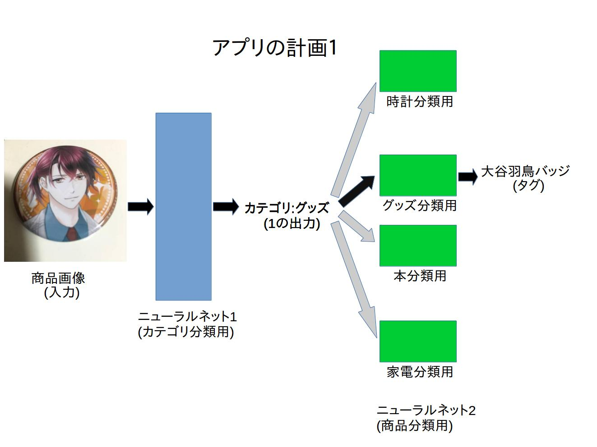

オークションアプリにおける画像の説明文の自動生成
オークションアプリ(サイト)における問題点
オークションに出す商品の説明文の入力はユーザに大きな負担をかける.
提案
オークションに上げる画像から情報を読み取り,ユーザに提供することで負担を減らせるのではないか.
手法
画像の分類は機械学習により画像の分類を学習させたモデルに画像を投げることで行う方法を使う.
使うもの
機器(PCのスペック詳細)
| PC名 |
cpu |
マザーボード |
メモリ |
ディスク |
GPU |
金額 |
| STYLE-R027-i7-XN |
Core i7-7700 |
インテル Z270 Express |
DDR4-2400 DIMM (PC4-19200) 8GB(4GB×2) |
1TB Serial-ATA HDD |
GeForce GTX 1080 Ti 11GB GDDR5X |
193,980 円 |
OSはUbuntu,フレームワークはTensorFlow,言語はPythonを現在考え中. 有料のAPIやライブラリの使用は今のところない. OS,フレームワーク,ライブラリすべて今のところオープンソースで使えるものを考えている.
はじめは簡単な学習をさせて分類を行う. かかる時間を簡単に計算したのが以下の表である.
必要時間
| 環境構築 |
画像の収集と処理 |
学習モデルの構築 |
実際の学習 |
合計 |
| 1日〜1週間 |
約3日 |
1〜3日 |
1〜2日 |
約1〜3週間 |
はじめの結果が出るのは早ければ1週間後(ほぼありえないが)になる. 少なくとも1ヶ月以内にははじめの簡単な学習ができていなくてはいけないだろう.
データの集め方
研究では画像は企業が手で集めた良い画像(学習しやすい画像)をもらっていたが, 今回の場合最終的に夜に出回る様々な商品の画像(と情報)を集めなくては行けないので,これは不適切ではないか. なんにせよ現在考えている,画像の集め方は以下の２つ.
-
スクレイピング、クローリング
この集め方の場合,画像処理は施したほうが良いだろうか? 集めたあとのタグ付けはできるのか? 画像の正当性(何度学習しても正解しない画像を削除すればいいかな?) 画像は集められるか.
この集め方はカテゴリ用の画像の収集には使えるかも
-
人工的
- 商品をある色の背景で撮影する.
- 背景のアルファ値を0にする.
- 画像の角度,向き,位置などを変えて適当な背景と合成する
この方法の場合,過去の製品の画像は得にくい.
- 公式サイトや,他のオークションサイトなどから画像を取ってくる.(人間が)
- 画像を加工し,データの水増しを行う.
構造ついて
計画1
最終的にオークションのタグ付けに使うのであれば,段階を分けてモデルを作るのはどうか. ひとつ目のモデルでは大まかなカテゴリの分類を行い,２つめのモデルで詳細な分類をおこなえば良いのでは? (あるいはそれ以上)

今後の計画
- 画像のスクレイピング,処理のプログラム,学習モデルの作成
- pcがきたら環境構築
- 簡単なモデルの学習(カテゴリ10くらい)
- 結果により学習モデルを変更,データベースの改善,データの増加いずれかを行う
- android,iosへの導入を試みる